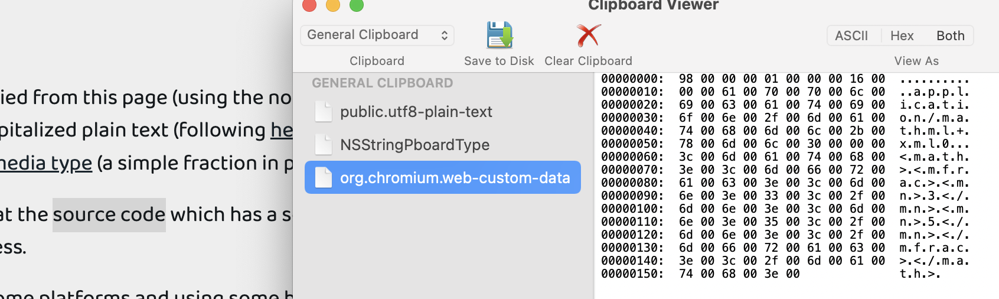
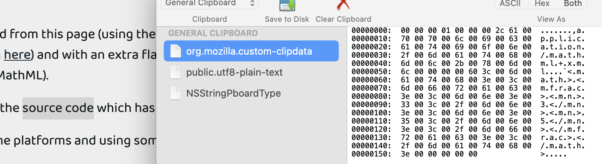
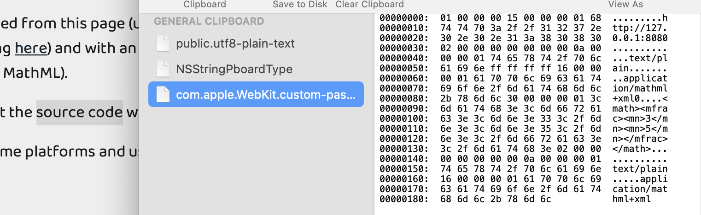

Any text copied from this page (using the normal copy mechanism) is copied as capitalized plain text (following here) and with an extra flavour of MathML media type (a simple fraction in presentation MathML).
Please look at the source code which has a script element showing the simple process.
Expected: On some platforms and using some browsers the clipboard flavour for MathML should appear so that desktop apps could consume what was copied (e.g. from a web-page of a textbook).
The obtained result is in the following pictures:
Chromium 108: 
Firefox 105: 
Safari 15.6: 
It is hard to say if these private formats have a hope to be specified or applicable. Or if they're going to stay at all. Maybe this is the reason why softwares such as Word prefer to do content-sniffing, detecting MathML in the plain-text.
I must say... this shows well that the current formula copy and paste does not work well, as you can see in this video.